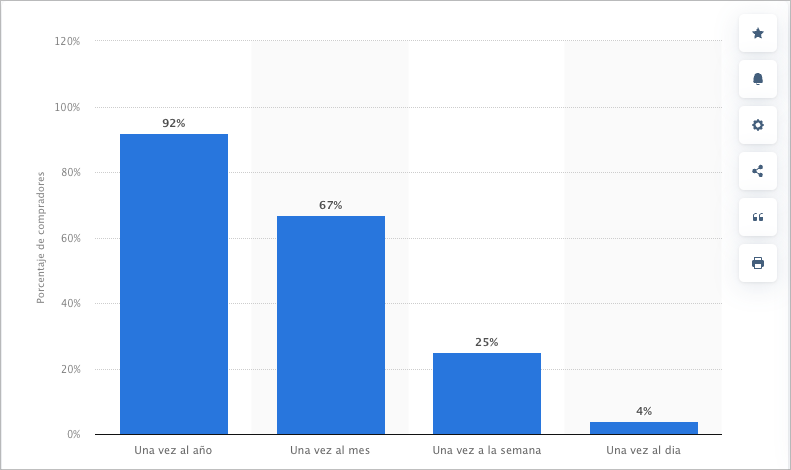

INICIO
SABER MAS
Marcas de moda sostenible online:
Patagonia
Everlane
Reformation
TOMS
Consejos para Compras Sostenibles
Investiga antes de comprar.
Opta por productos ecológicos y sostenibles.
Tecnologias para reducir el impacto ambiental:
Drones de entrega.
Vehículos autónomos.
Inteligencia artificial para optimizar envíos.
Envases biodegradables y compostables.
% de personas que realizan compras online
